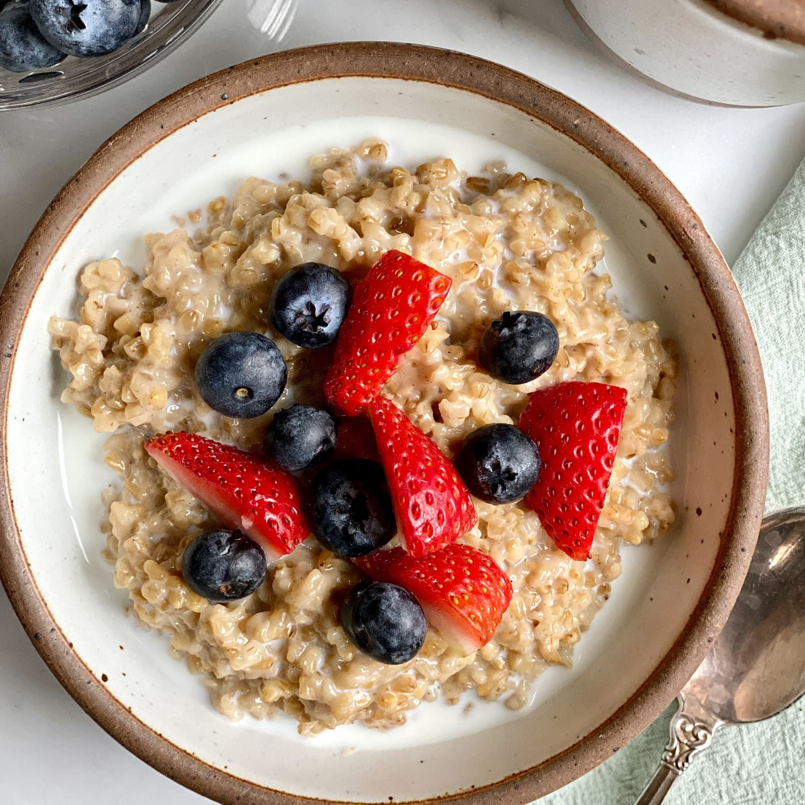

Description
Healthy food doesn't have to be boring. This spicy prawn linguine
has a spicy chilli kick to keep it interesting.
It's so delicious you'll forget that you're being virtuous
Ingredients
- 1 tsp olive oil
- 2 shallots, diced
- 1cm piece ginger, peeled and grated
- 1 clove garlic, crushed
- a large pinch chilli flakes
- 400g tin chopped tomatoes
- 150g linguine
- ½ bunch flat-leaf parsley, chopped
- 150g raw peeled prawns
Instructions
- Heat 1 tsp oil in a large frying pan, add the shallots and fry for 2 minutes before adding the ginger, garlic and chilli flakes.
- Fry for another 2 minutes. Add the chopped tomatoes and simmer for 20 minutes until saucy.
- Cook the linguine in boiling salted water until just tender, then drain.
- Stir the parsley and the prawns into the tomato base, season well and cook until the prawns turn pink.
- Add the cooked linguine, toss and serve.
Return to top
Return to main page